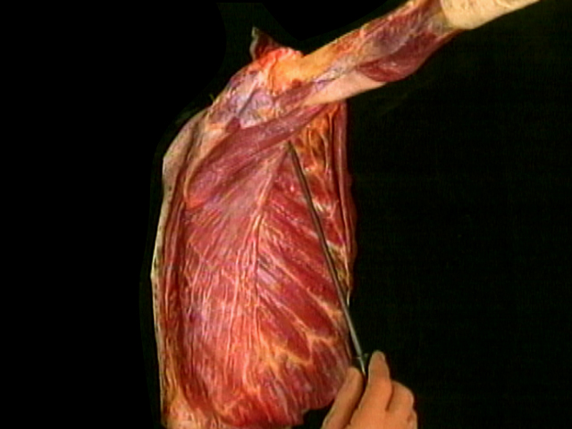
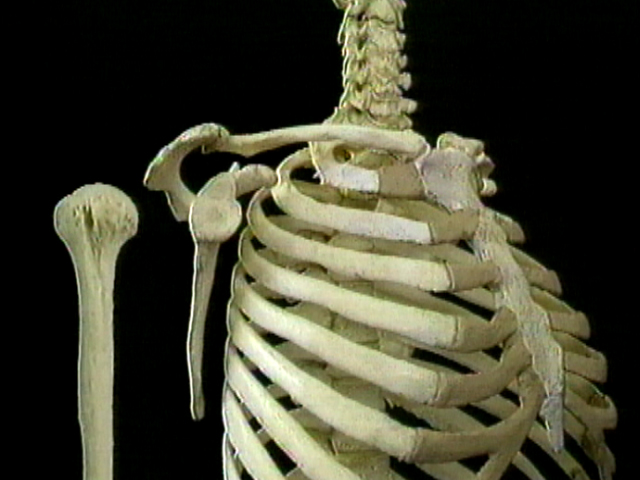
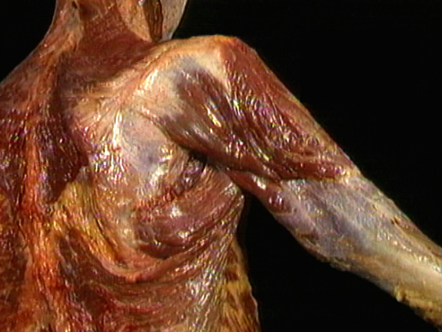
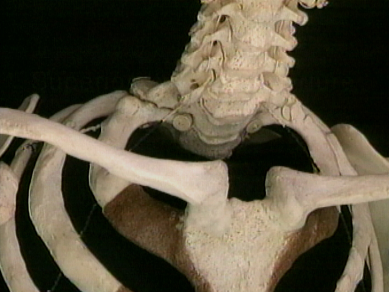
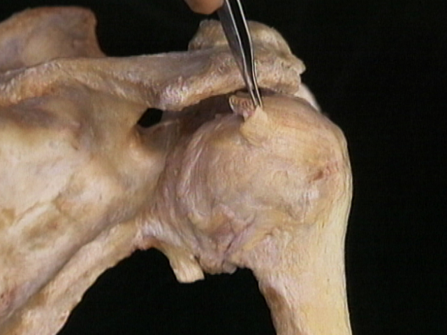
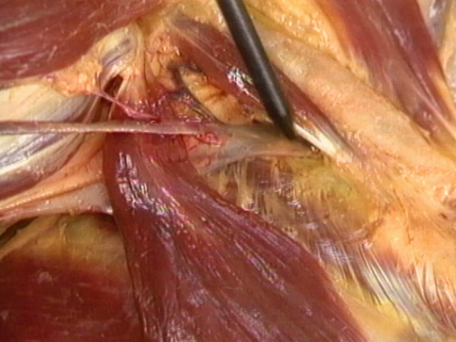
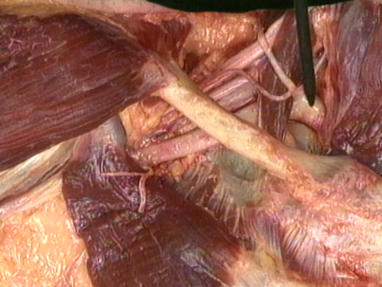
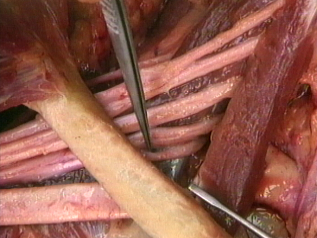
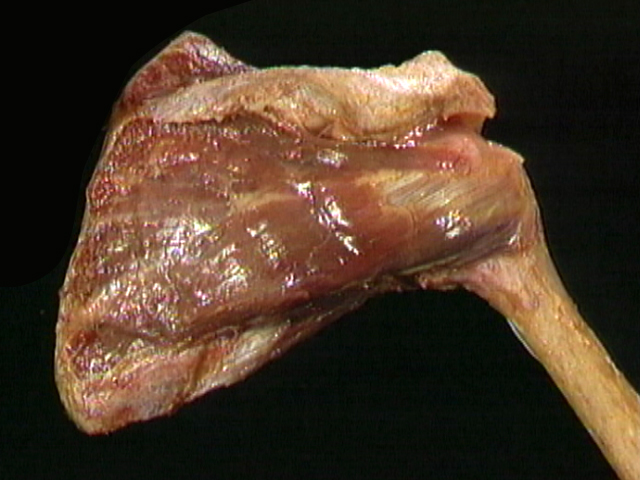
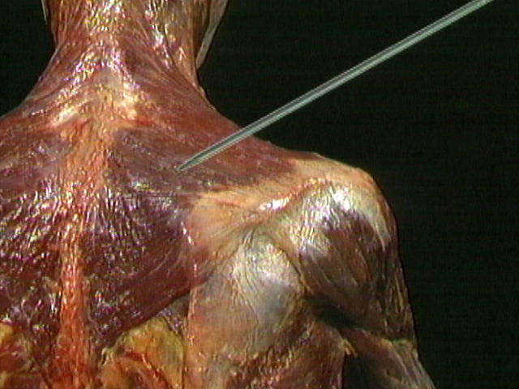

ВЕРХНЯЯ КОНЕЧНОСТЬ
•
Плечевой пояс:  1.1.9.
Печень при застойной желтухе  1.1.2.
Ключица и лопатка (4:11) 1.1.10.
Подагрический узел  1.1.3.
Движения ключицы и лопатки (0:59)  1.1.11.
Кальциноз артерий головного мозга  1.1.4.
Плечевой сустав и его движения (1:43)  1.1.12.
Серозное воспаление кожи 1.1.5.
Гиалиново-капельная дистрофия эпителия извитых канальцев почки  1.1.13.
Фибринозный перикардит  1.1.14.
Флегмона мягких тканей  1.1.7.
Мезенхимальное ожирение сердца 1.1.15.
Продуктивный энцефалит  1.1.8.
Жировая дистрофия печени № 62.
Трихинеллез № 267.
Милиарный туберкулез селезенки № 310.
Актиномикотический лимфаденит